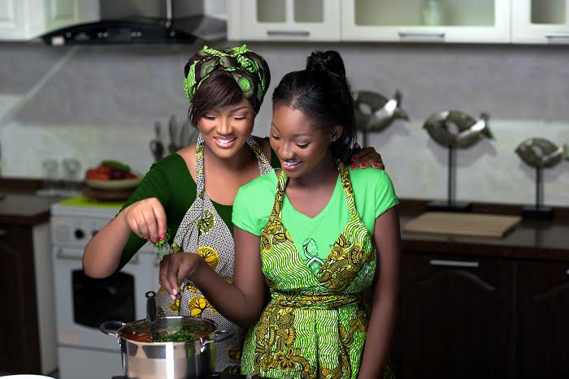

01
Toss in the greens
Add leafy greens to a dish already familiar to your community.
TOSSShow up for your community. Teach three simple cooking steps. Help make nourishing meals a habit.
50,000 mothers and daughters
started the movement.

Iron-deficiency anaemia affects families across Nigeria, yet the signs can be easy to miss. This campaign turns nutrition education into something practical, social, and easy to repeat.
Force for Good Champions bring the conversation into the places where food already brings people together: homes, neighbourhoods, schools, markets, and community groups.
See how the movement worksThe Green Food Steps make a nourishing cooking habit easy to remember, easy to teach, and easy to pass on.
Add leafy greens to a dish already familiar to your community.
TOSSShow how a small change can bring more colour, flavour, and goodness to the pot.
STIRFinish with a Knorr fortified stock cube as part of the everyday recipe.
CRUMBLEOne session at a time.
A Force for Good Champion does not need a stage. Just a place to gather, a meal to make, and the confidence to share something useful.
Get trained on the message, the meal, and the three steps.
Host a small, practical session where people can cook together.
Upload the story, record the reach, and keep the good moving.
Stories make the movement visible. Use video to show real cooking, real conversations, and real community energy.
Track the things that matter: communities reached, sessions held, and people who tried the steps for themselves.
Start your champion journeyThis is the beginning of the champion flow. Tell us where you want to make a difference and we will help you take the next step.
No sign-in needed for this prototype. Authentication comes later.
One meal. One conversation. One community at a time.